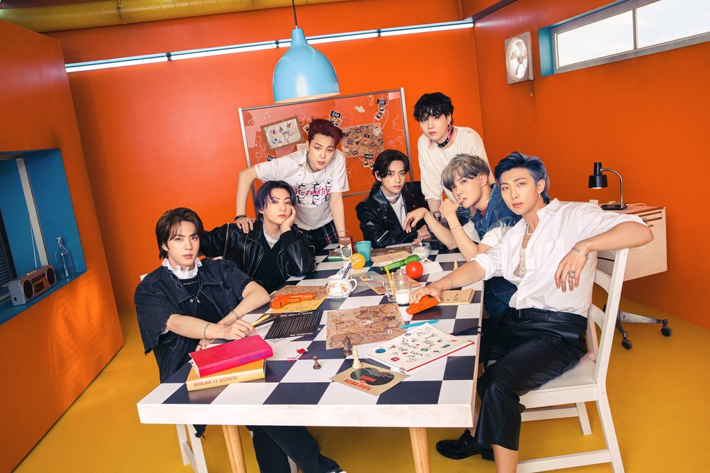

•Andrea Rivera Chavez•
Mi web Personal
Noticias
BTS gana el premio al grupo del año y mejor K-pop en los Premios a los Vídeos Musicales de la MTV
BTS fue nominado a un total de siete categorías -grupo del año, mejor K-pop, canción del año, mejor pop, mejor coreografía, mejor edición y canción del verano-, antes de la ceremonia anual de entrega de premios que se está llevando a cabo, el domingo (hora estadounidense), en el Barclays Center, en Brooklyn, Nueva York. El grupo masculino, que no pudo asistir a la ceremonia en persona, envió un vídeo en el cual agradeció a los VMA y a sus fanes. Según Billboard, la banda dijo que siente su amor cada minuto y segundo.
Brit Awards 2021: Billie Eilish ganó el premio a mejor artista internacional femenina
En la categoría de mejor artista internacional también estaban nominadas las cantantes Ariana Grande, Cardi B, Miley Cyrus y Taylor Swift. Eilish regresó a esta categoría después de llevarse el galardón el año pasado. Asimismo, la artista anunció a finales de abril que su segundo disco “Happier Than Ever” se publicará el próximo 30 de julio. “Esta es la cosa favorita que jamás he creado y estoy muy emocionada, nerviosa y deseando que lo escuchen. No puedo ni expresarlo. Nunca sentí tanto amor por un proyecto”, aseguró Billie en sus redes sociales.